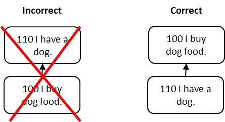

оговорка отмены причинно-следственных связей (cause-effect reversal reservation) - Оговорки уровня III в категориях законных резервирований, которое используется для выяснения того, поменялись ли причина и следствие. Также называется оговоркой тавтологии.
Использование: Иногда причинно-следственная связь может быть обращена вспять. Обычно это происходит, когда эффект выводится на основе фактов, а не путем ответа на вопрос: «Что вызвал эффект? »или« Что вызывает что? »
Иллюстрация 1: Логическая диаграмма слева внизу выражена словами: Если 100 я покупаю корм для собак, то 110 у меня есть собака. Причинно-следственная связь неверна, потому что покупка собачьего корма не привела к тому, что вы завели собаку.
Изменение направления стрелки причинно-следственной связи приводит к правильной диаграмме справа, которая гласит: Если 110 у меня есть собака, то 100 я покупаю собачий корм.

Иллюстрация 2: Сценарий «Дом в огне» является конкретным примером обращения причинно-следственной связи. На рисунке слева внизу дана словесная формулировка: Если 3 Пожарная машина припаркована у моего дома, то 5 Мой дом горит. Однако на самом деле причинно-следственная связь обратная, как показано справа. Если 5 Мой дом горит, то 3 Возле моего дома припаркована пожарная машина.
Синоним: тавтология.
#мп
#кплп
Синоним: cause-effect reversal reservation